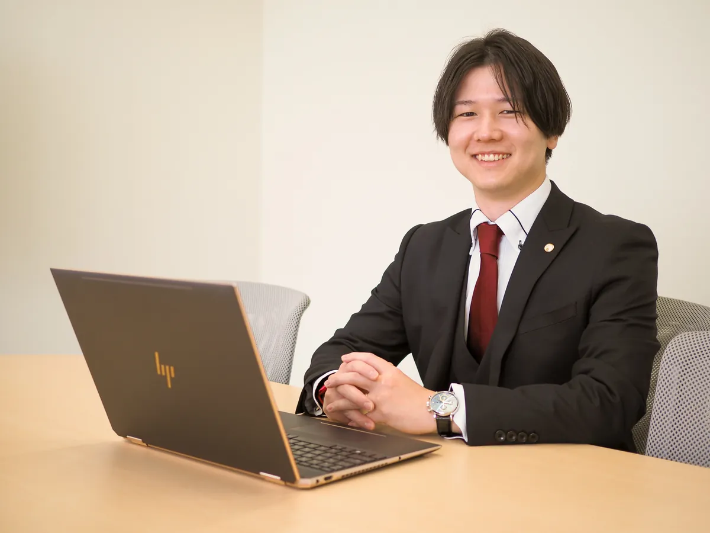
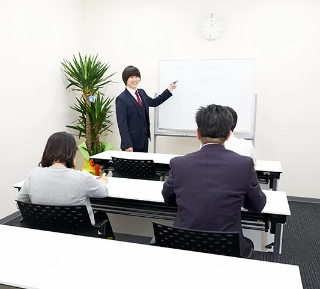

こんなこと、ありませんか？
- 決算のたびに、納税額を見て驚いている
- 試算表は届くけれど、数字の見方が分からない
- 起業したいが、個人と法人のどちらが得か迷っている
- うちに相続税がかかるのか、まず知りたい
- そろそろ後継者への引き継ぎを考えはじめた
- 従業員が増えて、社会保険や就業規則が不安
「どこに聞けばいいか分からない」は、まず私たちに。
業務案内
日々の記帳から決算、相続、労務まで。ひとつの事務所で、経営と暮らしのお金をまとめてサポートします。
会計・税務
毎月の訪問で試算表を一緒に確認し、決算の着地点や納税額を早めに予測。決算書・申告書の作成、税務調査の対応まで担当します。
詳しくみる
相続・事業承継
生前の相続税対策から申告、後継者への株式承継やM&Aまで。弁護士・司法書士・不動産鑑定士と連携します。
詳しくみる
経営サポート
個人か法人か迷う起業前のご相談から、資金繰りや収益改善まで。元地方銀行員の経営承継アドバイザーが在籍しています。
詳しくみる
経営実務スクール
経営者のためのB/S講座、簿記3級、法人税申告書の作成まで。実例をもとに、明日から使える知識をお伝えします。
詳しくみる
労務・社会保険
同じ事務所の氏家社会保険労務士事務所と連携。社会保険の手続きから就業規則の作成まで、税務とまとめてご相談いただけます。
詳しくみる他士業との連携
税理士の業務範囲を超えるご相談は、信頼できる弁護士・司法書士・土地家屋調査士などの専門家をご紹介します。
詳しくみるあかり事務所が
選ばれる理由
私たち税理士法人ACEあかり事務所のスタッフは誠実をモットーとし、税務・会計の専門家として貴社の発展を全力でサポートいたします。
毎月、顔を合わせる税理士
毎月の訪問で会計資料を確認し、経営状況を分かりやすくご説明します。決算の着地点や納税額を早めに予測できるので、「決算で慌てない」状態をつくれます。
税理士と社労士が、同じ事務所に
同じ建物に氏家社会保険労務士事務所があります。給与計算・社会保険・就業規則まで、税務とまとめて一つの窓口でご相談いただけます。
相続・事業承継は、専門家チームで
弁護士・司法書士・不動産鑑定士などと連携し、ご家族みんなが納得できる承継を考えます。元地方銀行員の経営承継アドバイザーも在籍しています。
担当するのは、この人たちです
税理士・社会保険労務士・経営承継アドバイザーを含むスタッフが、チームでお客様を担当します。
スタッフ紹介では、一人ひとりのプロフィールと自己紹介動画をご覧いただけます。どんな人が担当するのか、ご相談の前にぜひご覧ください。
スタッフ紹介をみる


税理士法人ACE「あかり事務所」の名称の由来は「一隅を照らす」という言葉です。
ひとりひとりがそれぞれの立場・役割において全力をつくしその場を照らす、そのことがひいては社会全体をあかるく照らすことに繋がっていく。
私たちは税理士という役割を担いその使命を果たすことで少しでも皆様のお役に立ちたい。そんな思いが込められております。
ご相談の流れ
ご相談・お見積もりは無料です。料金は、ご依頼の内容・仕事量・難易度によって異なります。必ず事前にお見積もりし、ご同意いただいてから決定します。
- 01
無料相談
お電話・メールで、ご依頼内容や会社の状況をお聞かせください。
- 02
お見積もり（無料）
業務の範囲と金額を、書面で事前にご提示します。
- 03
ご契約
内容にご納得いただいてから契約となります。見積もりだけでも構いません。
よくあるご質問
見積もりだけでも対応していただけますか？
もちろんお見積もりだけでも無料で対応させていただきます。
料金はどのように決められますか？
料金は、ご依頼内容、仕事量、難易度等によって異なります。当事務所はお客様のご要望をお伺いしながら、いくらかかるか事前にご相談させていただきます。お見積もりをさせていただき、お客様の同意のもと、決定させていただくシステムを徹底しております。目安は料金ページをご覧ください。
起業したいのですが、会社設立前から相談にのっていただけますか？
会社設立手続きから税務労務等の申請手続きまで、ご相談のうえお客様の起業をサポートいたします。
先代からの事業承継で悩んでいます。相談に乗っていただけますでしょうか？
今までの実績と経験を元に、問題点を洗い出して最適な方法を一緒に考えさせていただきます。
まずは、話してみませんか。
ご相談・お見積もりは無料です。「何から聞けばいいか分からない」という段階でも大丈夫です。
事務所・アクセス
| 名称 | 税理士法人ACEあかり事務所 |
|---|---|
| 代表者 | 代表社員 税理士 藤本 博之 |
| 所在地 | 〒760-0080 香川県高松市木太町5050番地17 |
| 電話 / FAX | 087-814-7134 ／ 087-814-7135 |
| 受付時間 | 9:00〜17:30（土・日・祝日休み） |
| 駐車場 | あり（◯台） |
| 同所 | 氏家社会保険労務士事務所 |